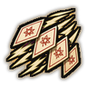
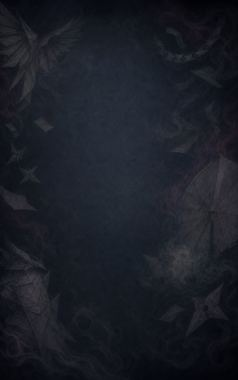
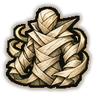
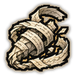
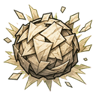
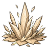
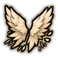
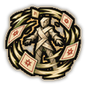
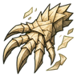
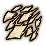

Hisan Fuda: Flying Cards C
Throw chakra-hardened cards, four at a time.
| Rank | Chakra | Cooldown | Class level |
|---|---|---|---|
| C | 12 | 8 s | 2 |

Technique trees › Clans and bloodlines
11 techniques · Ninjutsu tab
Needs the Paper Release gene.

Throw chakra-hardened cards, four at a time.
| Rank | Chakra | Cooldown | Class level |
|---|---|---|---|
| C | 12 | 8 s | 2 |

Wrap the user in layers of hardened paper for half an hour.
| Rank | Chakra | Cooldown | Class level |
|---|---|---|---|
| C | 15 | 50 s | 3 |
A quick shield of paper around the user that catches a few shots.
| Rank | Chakra | Cooldown | Class level |
|---|---|---|---|
| C | 15 | 30 s | 4 |

Lash a chain of paper around an enemy and hold them. The sharpened version also cuts.
| Rank | Chakra | Cooldown | Class level |
|---|---|---|---|
| C | 20 | 25 s | 5 |
| B | 25 | 25 s | 10 |

A ball of compressed paper that bursts silently.
| Rank | Chakra | Cooldown | Class level |
|---|---|---|---|
| C | 20 | 15 s | 6 |

Paper on the ground springs up into spikes under a small area.
| Rank | Chakra | Cooldown | Class level |
|---|---|---|---|
| C | 20 | 20 s | 7 |

Paper wings carry the user much faster for an hour.
| Rank | Chakra | Cooldown | Class level |
|---|---|---|---|
| C | 15 | 50 s | 5 |
| B | 25 | 50 s | 11 |

Decks of cards circle the user for an hour and slice anyone who comes close.
| Rank | Chakra | Cooldown | Class level |
|---|---|---|---|
| B | 30 | 83 s | 9 |
A swirling mass of paper around a spot catches enemy shots for twenty seconds or until torn apart.
| Rank | Chakra | Cooldown | Class level |
|---|---|---|---|
| B | 35 | 50 s | 11 |

Wrap one arm in paper to form a giant spiked claw for half an hour of brutal melee.
| Rank | Chakra | Cooldown | Class level |
|---|---|---|---|
| A | 45 | 83 s | 15 |

Send paper into the sky to rain down as blades over a wide area for five seconds.
| Rank | Chakra | Cooldown | Class level |
|---|---|---|---|
| A | 60 | 100 s | 16 |
| S | 90 | 200 s | 20 |